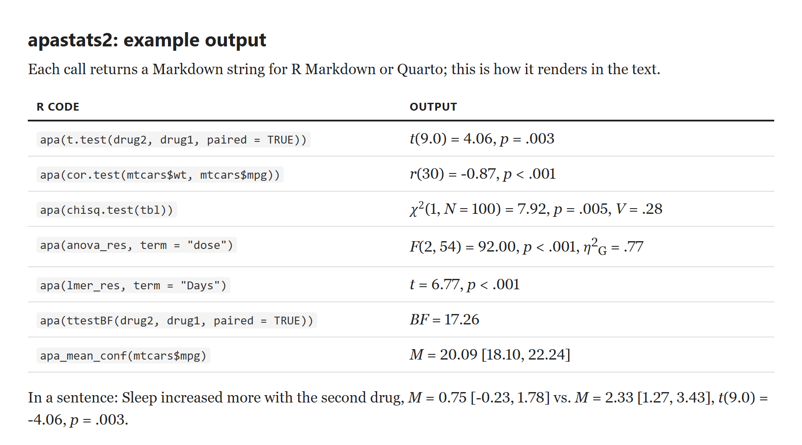

Utilities for APA-style reporting of statistical results, plus helper functions for confidence intervals, summaries, and plotting.
Install
install.packages("remotes")
remotes::install_github("achetverikov/apastats")Example Output
How the results look when the Markdown strings are rendered in R Markdown or Quarto:

apastats2 output for a t-test, correlation, chi-square test, ANOVA, mixed model, Bayes factor, and mean with confidence interval, as rendered text
Source: example/readme_output.Rmd (built-in R datasets).
Main Function Families
-
apa(): formatted output for many model/test objects via S3 methods -
apa_*: APA-formatted means, confidence intervals, test statistics -
get_adjusted_ci(): confidence intervals/SEs for between-subject, within-subject, and mixed designs -
plot_pointrange(): point-range plotting using the same adjusted-interval engine - misc utilities (
round_p(),f_round(),drop_empty_cols(), etc.)
Documentation
- Website: https://achetverikov.github.io/APAstats/
- Function help:
?apa,?apa_mean_conf, etc. - Vignette:
vignette("apastats2-intro", package = "apastats2")
Transition from apastats to apastats2
If you are migrating old scripts:
- Install/load the new package:
- Prefer
apa()andapa_*functions in new code. - Legacy
describe.*functions still work for now, but are deprecated and planned for removal. - Legacy dot-named utility functions are also deprecated; use snake_case equivalents (see mapping below).
In most cases, replacing library(apastats) with library(apastats2) and then progressively updating deprecated calls is enough.
Deprecated Mappings
Legacy describe.* wrappers are deprecated and will be removed in the next release. Use the following replacements:
-
describe.ttest()->apa()(fort.testobjects) -
describe.r()->apa()(forcor.testobjects) -
describe.chi()->apa()(forchisq.testobjects) -
describe.glm()->apa()(forglm/lmobjects) -
describe.mean.sd()->apa_mean_sd() -
describe.mean.conf()->apa_mean_conf() -
describe.binom.mean.conf()->apa_binom_mean_conf() -
describe.mean.and.t()->apa_mean_and_t()
Additional deprecated compatibility mapping:
For utility helpers, snake_case aliases are now available and dot-named forms are legacy:
-
mean.nn()->mean_nn() -
sd.nn()->sd_nn() -
sum.nn()->sum_nn() -
drop.empty.cols()->drop_empty_cols() -
binom.ci()->binom_ci() -
f.round()->f_round() -
load.libs()->load_libs() -
lmer.fixef()->lmer_fixef() -
omit.zeroes()->omit_zeroes() -
base.breaks()->base_breaks() -
base.breaks.x()->base_breaks_x() -
base.breaks.y()->base_breaks_y() -
plot.pointrange()->plot_pointrange()